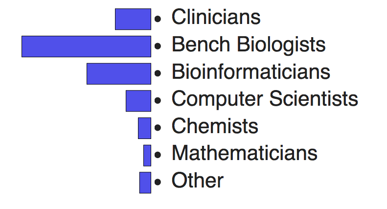

Cytoscape and Network Biology:
an Introduction
Slides: http://tutorials.cytoscape.org
John "Scooter" Morris, Alex Pico and Yihang Xin
UCSF and Gladstone
17 February 2023
Goals and Motivations
- Understand the major applications of network biology
- Find relevant networks and pathways
- Import your data into Cytoscape
- Perform basic topological and other network analyses
- Master network layouts and data visualization
- Know where to find relevant Cytoscape apps and tutorials
Introductions
- Director, Bioinformatics Core
- Executive director, National Resource for Network Biology
- Cytoscape team since 2006
- Author of a handful of Cytoscape apps and RCy3
Introductions
- Executive director, Resource for Biocomputing, Visualization, and Informatics
- Roving Engineer, National Resource for Network Biology
- Cytoscape team since 2006
- Author of over a dozen Cytoscape apps
Introductions
- Software Engineer, Bioinformatics Core
- Cytoscape team since 2020
- Contributor of a handful of Cytoscape apps and RCy3
- First time coteach this course...
Introductions


Introductions
- None -- that's what I'm here for!
- Some network analysis, but what's Cytoscape?
- I've played with Cytoscape, but still have a lot to learn.
- I use Cytoscape all the time...
(hey, I could probably teach this course!)
Tour of Cytoscape

- Launch the latest version of Cytoscape
Tour of Cytoscape


- Open CyBrowser
- Enter URL: tutorials.cytoscape.org
Tour of Cytoscape


- Click on Tour of Cytoscape
- Resize window to your preference
Tour of Cytoscape
- Loading networks
- Loading tables
- Selection and filtering
- Changing visual attributes
- Exporting images
- Saving sessions
Hands-on Exercises
This tutorial presents a scenario of how expression and network data can be combined to tell a biological story.
Hands-on Exercises
What have we learned?
What's Next
Cytoscape 3.9
- Major new features:
- Table styles -- can set up mappings for table columns
- Improved performance for large networks
- Support for edge Z order
- Haystack edges
- Copy/paste for annotations
- Annotation and label rotation
- New equations editor
- Commands to create and modify annotations
Q&A
Working with Your Data
Take the rest of the time to use Cytoscape on your own data, or one of the additional exercises below, and to put into practice what you've just learned
Other tutorials are available at: tutorials.cytoscape.org